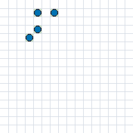
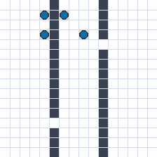
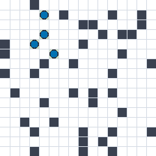
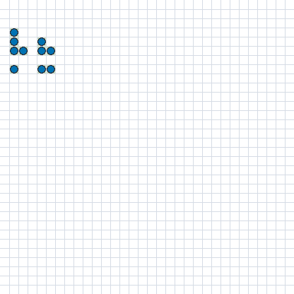
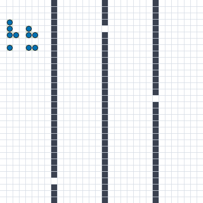
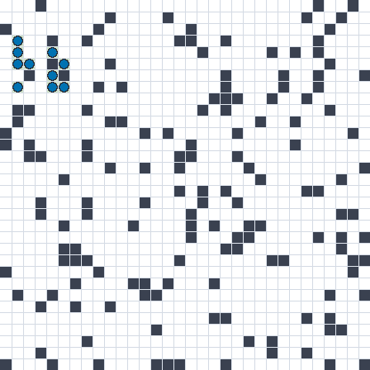

A technical white paper on the architecture of a team of autonomous agents that covers a map without losing touch — the models, the mathematics, and the experiments that reshaped them. Written for readers with an undergraduate CS background: it keeps the formalism and defines every symbol as it goes. Companion to the Theory page (full formalism) and the Findings.
We study a team of N agents that act on local information, communicate only over a range-limited, time-varying graph, and are scored by a single team-level objective. The formal object is a finite-horizon cooperative Dec-POMDP — a decentralized, partially observable Markov decision process [1]. It is the multi-agent generalization of the MDP most CS students meet in an intro-RL course, with two twists: several agents act at once, and none of them sees the true state. The tuple is:
Every symbol, with its concrete meaning in our grid world:
In an ordinary MDP the agent is assumed to see the full state s_t and choose its action from it. A POMDP breaks that assumption. The state s_t still evolves under T, but no agent observes it. Instead, after each transition the observation model O emits, for each agent i, a local observation drawn from Ω_i:
Here O returns exactly what agent i can physically sense — the occupancy of the cells in a small window around it, its own coordinates, and the messages arriving from in-range neighbors — and nothing about distant regions or out-of-range teammates. Partial observability is precisely this gap between s_t (everything true) and o_{i,t} (the sliver agent i receives). It is why an agent cannot simply "look up" the global coverage or the connectivity, and why it must build up a belief over time (§4.5). Formally, a plain MDP is the special case o_{i,t} = s_t.
Each agent has its own decision rule π_i. Bundling them gives the joint policy π = (π_1,…,π_N). It is called joint because the mission outcome depends on all agents together — no agent's contribution is scored in isolation; they jointly determine what happens. Running π from a start state produces a trajectory — the actual sequence the episode traces out:
Because the start state (ρ₀) is drawn at random and the policies are stochastic (they sample actions), τ is a random object: run the same π twice and you get two different trajectories. (In the general Dec-POMDP the transition T can add further randomness too; in our grid it is nearly deterministic, so ρ₀ and the policies are the operative sources.) The mission return is the total reward summed along one trajectory, and J(π) is its expected value — the probability-weighted average over all trajectories π could produce:
where E_{τ~π}[·] is the expectation (average) over trajectories induced by π, and the sum runs over the H steps. Training seeks the π that maximizes J(π). What makes the multi-agent case distinctive is a decomposition into three layers, where interaction enters the mission twice — shaping each agent's input, and shaping how the joint action composes into the next state.
Agent i's local input at step t is x_{i,t} = (o_{i,t}, q_{i,t}): its observation o_{i,t} (what it senses, above) plus an auxiliary vector q_{i,t} holding the other things it receives this step — chiefly the aggregated neighbor messages (c_{i,t} below) and its role tag. Because one input is a thin slice of the world, the agent's decision depends on its whole history — the sequence of the full inputs it has taken in, interleaved with its own past actions:
Note this accumulates the full inputs x — each already carrying the messages the agent received — not the bare observations o. (The textbook "action–observation history" writes o only because there the observation is defined to subsume received communication; since we split messages out into q, the history must carry x.) The belief b_{i,t} — the agent's occupancy map, its connectivity estimate λ̂₂, and trust features — is a learned sufficient statistic of this history, so in practice the policy conditions on the belief rather than replaying the whole sequence: a_{i,t} ~ π_i(·|h_{i,t}) ≈ π_i(·|b_{i,t}).
A time-varying directed graph G_t = (I, E_t) defines who can talk to whom at step t. Agent i's in-range neighbors are N_{i,t}. It receives a message m_{j→i,t} from each neighbor j and must fuse a variable number of them into a fixed-size context c_{i,t} via an aggregation operator:
The Dec-POMDP objective, eq. (2). Interaction enters twice: once shaping each agent's input (through c_{i,t} inside x_{i,t}), and again in how the joint action a_t composes into the next state through T. The research question is how a perturbation confined to the micro level propagates through the bridge and manifests as a change in the macro return — the micro-to-macro gap. Load-bearing assumptions: local agency, partial observability, topology-constrained interaction, a mission-level objective, and trust-by-default among neighbors.
The bridge touches the mission through two mechanically separate channels: an agent's presence affects the outcome once on the way in to others' decisions, and once on the way out through the shared dynamics.
1 · Through the input (information coupling). Before agent i decides, it folds in neighbor messages: c_{i,t} is part of its input x_{i,t} (eq. 3). What others sense and say changes what i believes and chooses. Cut all communication and this channel vanishes. E.g. a neighbor signals which corridor it already swept, so i goes elsewhere.
2 · Through the transition (dynamics coupling). After everyone decides, the next state s_{t+1} = T(·|s_t, a_t) is a function of the joint action, not of i's alone. Actions physically compose: collisions, the union that defines coverage (eq. 4), and the graph that defines connectivity (eq. 5) all depend on where everyone is. This channel is present even with zero communication. E.g. whether i's move newly covers a cell depends on whether anyone else already did.
The two are independent — either can exist without the other. Both are why a micro fault becomes a macro failure, and a compromised agent can inject through either: poisoned messages (channel 1) or corrupting actions (channel 2) — the message/observation vs. action attack surfaces of §7.
The concrete world is an H×W occupancy grid with obstacles. Two quantities are measured every step and stand in tension.
Coverage is easy to mis-state as "tick each cell once." Information-theoretically it is uncertainty reduction: each free cell carries a belief about its contents, and a visit is a measurement that sharpens that belief. Let n_c(S) count how many times cell c has been measured by the agents in a set S, with v_{i,c} agent i's own visit count. The deliverable is the total certainty the team accrues over the map V:
where φ is increasing and concave — each further measurement of the same cell adds less than the last. If the k-th visit is worth about 1/√k (the certainty-gain shaping we have used), a cell's certainty grows like 2√n and saturates. Two consequences follow:
This G is monotone submodular — a concave function of the (additive) visit counts, summed over cells — the information-theoretic generalization of set cover (the mutual-information sensor-placement objective, Krause & Guestrin [17]). Monotone: a measurement never increases uncertainty. Submodular: the more the team already knows, the less any new measurement reveals:
Piling agents onto ground the team already knows well yields little fresh certainty, so — under the budget — a good policy spreads to where uncertainty is highest rather than re-confirming the same cells. The plain "distinct cells visited" count, which we report as the coverage %, is the hard special case φ(n) = 1[n ≥ 1] (one visit saturates a cell); the information-faithful objective keeps φ smooth and concave, so it values confidence, not only reach — the two collapse only when a single visit is treated as full certainty.
Build the communication graph G_t with an edge between agents within range r. With adjacency matrix A and diagonal degree matrix D, the graph Laplacian is L = D − A, whose eigenvalues order as 0 = λ₁ ≤ λ₂ ≤ … ≤ λ_N. The second-smallest, λ₂, is the algebraic connectivity (Fiedler value) [2]:
with larger λ₂ meaning a more robustly connected team. We use g_conn(s) = −λ₂(L(G_t)) as a differentiable connectivity constraint.
λ₂ is a spectral property of the entire graph: computing it needs the full adjacency matrix A — i.e. god's-eye knowledge of every agent's position. Under decentralized, partially observable execution, no agent can compute it. So it is fair to ask how we may use it at all. The answer is that λ₂ plays three distinct roles, and only the first two touch it directly:
1 · As a metric (evaluation). We compute the true λ₂ with god's-eye access purely to measure connectivity when scoring a run. Bookkeeping — the agents never see it.
2 · At training time (this is what CTDE licenses). The centralized critic V_φ(s) and any centrally-computed reward term legitimately see global state — that is the entire point of centralized training (§4.2). A λ₂ term can shape the actors' weights during training without ever being an input to them at run time.
3 · At execution — never the true λ₂. Deployed agents act on local proxies only: local degree (how many neighbors I can still hear), a gossip-propagated estimate of my connected component, or a learned estimate λ̂₂ from the decentralized, size-invariant belief network (§4.5), which infers connectivity from local message passing. The "active λ₂-anchor" relay of §4.7 climbs this estimated λ̂₂, not the god's-eye value. Estimating λ₂ in a decentralized way is itself a distributed message-passing computation (distributed power iteration on L), which is exactly why that belief module is recurrent. And the Fiedler-oracle experiment in §5 — which did hand agents the exact λ₂ — was a deliberate diagnostic whose null result confirms we are not secretly relying on centralized connectivity.
Agents are labeled blue (nominal) and red (adversarial). Sections 1–6 build and analyze the blue team; Section 7 introduces the adversary formally.
03 · design spaceAn "architecture" is not one decision but a point chosen on several independent axes. Each row of the table is one knob; a complete agent design picks exactly one option per row. We hold the others fixed and vary one axis at a time, so any change in the result is attributable to that axis rather than to an uncontrolled confound. Each axis also maps onto a layer of the formalism from §1 — perception and belief are the micro input x_{i,t}; aggregation is the bridge Agg_i; the reward and the connectivity constraint act at the macro level.
| Axis | What it sets (formal → plain) | Options we actually ran | § |
|---|---|---|---|
| Learning / optimizer | argmax_θ J(π_θ) — how the weights improve | MAPPO-CTDE (main) · IPPO · joint policy · evolution strategies (coexisting) | 4.2–4.3 |
| Reward & credit | the per-agent training signal from R — what each agent is paid for | credit: shared return vs per-agent difference reward D_i · terms: coverage · reach-connectivity · collision · anti-overlap · conn-floor barrier · congestion price · info-gain | 4.4 |
| Perception & belief | the input x_{i,t} and memory h_{i,t} — what it sees and remembers | frontier attention · occupancy belief · size-invariant graph belief (GCRN) · | 4.5 |
| Aggregation | the bridge operator Agg_i — how neighbor messages fuse | sum · mean · max · attention | 4.3 |
| Action abstraction | what the learned policy commits to; a low-level controller renders it into the primitive moves A_i | short-horizon goal-pointer + greedy controller (current) · | 4.6 |
| Roles | a partition of I — homogeneous or specialized | homogeneous · explorer/relay, with active λ₂-anchor vs. static hold | 4.7 |
| Agent individuation | how identical shared-parameter agents are made distinct (symmetry-break) | shared params (identical) · identity-conditioned goal residual (dico) · grouped sub-actors (fork) | 4.7 |
| Connectivity mechanism | how the constraint λ₂ ≥ λ_min is enforced | hard mask · soft penalty · Lagrangian / PID-Lagrangian | 4.8 |
Before the learning method, the shape of the agent. A single flat network that maps an observation straight to a one-step move conflates two very different jobs — deciding what to do and doing it — and (§4.6) caps what the team can express. We instead organise each agent as a small stack of multi-layer cognition, so learning is spent only where it earns its keep:
Only L2–L3 carry learned weights; L1 is deterministic machinery. So the action the policy chooses is a goal / skill / role, not a raw move — the learning method below need only learn a compact high-level policy sitting on top of a reliable controller.
The learned part (L2–L3) is a policy network trained by reinforcement learning. Because the rest of the paper leans on it, here it is from the pieces — assuming only that you know what a neural network and a gradient are.
Two networks — an actor and a critic. The actor π_θ is the policy: it maps the agent's local input to a probability for each action (a softmax), with weights θ. To learn which actions are good, it needs a yardstick for how good a situation is — that is the critic V_φ, which maps a state to a single number, the expected future return, with weights φ. The actor decides; the critic grades.
Inside the actor: a CNN, then a GNN — and the order is the point.
What is V? The critic's output V_φ(s) is the value function: from the global state s it predicts the expected total remaining team reward under the current policy — one number, a grade for the situation, not an action. Its whole job is to be the baseline in the advantage Â_t = return − V_φ(s_t): subtracting "how good this state is on average" isolates "how much better this action was than average," which is what cuts the variance of the policy-gradient step. It sees the whole board (centralized) and is discarded at deployment — the running agent never computes a value.
How big is it? Real counts from the built model (width 64, depth 2, 2 message-passing rounds). The actor's input is a 5-channel egocentric map (5×H×W); the critic's is the 3-channel global map; both pool to a 64-dimensional belief. Outputs: 9 goal-candidate logits (plus a 2-way role logit and a scalar value) for the actor, one scalar for the critic.
| Component (width 64) | params | role |
|---|---|---|
| backbone — CNN local perception + GNN message-passing | 81,472 | the shared trunk → 64-d belief |
| heads — goal (64→9) · role (64→2) · value + aux (64→1) | 845 | always-on outputs |
| optional modules — GRU memory 24,832 · goal-residual · frontier-attn · compass · selector · flock | 31,640 | built for a stable param tree; each used only when its §3 axis is on |
| Actor total — one network, shared by all N agents | 113,957 | the only network deployed |
| Critic — CNN over the 3-channel global map → scalar | 38,913 | centralized, training-only, discarded at deployment |
| Total trainable | 152,870 | ≈ 0.15 M |
Same network, every scale. Parameters are identical across world sizes and team sizes — the size-invariant backbone plus parameter sharing mean one net serves every rung; only the input grid and the number of forward passes grow (verified by building the model at each rung):
| Rung | actor in | critic in | actor / critic / total | fwd passes · 100-step ep |
|---|---|---|---|---|
| 16² / 4 agents | 5×16×16 | 3×16×16 | 113,957 / 38,913 / 152,870 | 400 |
| 24² / 6 agents | 5×24×24 | 3×24×24 | 113,957 / 38,913 / 152,870 | 600 |
| 32² / 10 agents | 5×32×32 | 3×32×32 | 113,957 / 38,913 / 152,870 | 1000 |
What actually changes the size is the architecture, not the scale (real counts):
| Variant | actor | critic | total |
|---|---|---|---|
| width 64 (default) | 113,957 | 38,913 | 152,870 |
| width 128 | 431,973 | 151,553 | 583,526 |
| width 256 | 1,682,405 | 598,017 | 2,280,422 |
| depth 3 (extra conv layer) | 150,885 | 75,841 | 226,726 |
| message-passing rounds 3 | 134,693 | 38,913 | 173,606 |
| neighbour-attention (agg = multihead) | 113,957 | 38,913 | 152,870 — no change |
| edge-distance messages | 114,213 | 38,913 | 153,126 |
| B-fork ×2 (grouped sub-actors) | 227,914 | 38,913 | 266,827 |
Policy gradient — nudge good actions up. The basic rule (the policy-gradient theorem / REINFORCE) raises the probability of actions that beat expectation and lowers the rest:
Read it literally: take the gradient of the log-probability of the action the agent actually took, and scale it by Â_t — a signed measure of how much better that action was than the situation's average. Positive pushes that action's probability up; negative pushes it down.
Advantage, and why a critic. That scalar is the advantage — how much better a specific action is than the state's baseline value:
Plugging in raw returns for Â_t works but is very noisy. Subtracting the critic's baseline V_φ(s_t) — which does not depend on the action taken — leaves the update's direction unbiased while slashing its variance, so learning is far faster and stabler. The critic exists to be that baseline.
PPO — don't take too big a step. A raw policy-gradient step can overshoot and collapse the policy. PPO (Proximal Policy Optimization) [3] keeps each update inside a cheap trust region using the probability ratio between the new and old policy, r_t(θ) = π_θ(a_{i,t}|o_{i,t}) / π_θ⁻(a_{i,t}|o_{i,t}) (θ⁻ = weights before the update), and clipping it so that once the policy has moved "far enough" in the advantageous direction, moving further stops paying:
The outer min takes the pessimistic of the clipped and unclipped surrogate: it removes the incentive to overshoot without ever penalising a cautious step.
GAE — estimating the advantage well. We never observe the true Â_t; we estimate it from the rollout, and the estimate has a bias–variance dial. The one-step temporal-difference error δ_t = r_t + γV(s_{t+1}) − V(s_t) is low-variance but biased (it trusts the critic); summing many steps of real reward is unbiased but high-variance. Generalized Advantage Estimation [4] blends the whole spectrum with a single knob λ ∈ [0,1]:
λ = 0 is pure one-step (low variance, more bias); λ = 1 is full Monte-Carlo (unbiased, high variance); in between trades them off. That is why GAE — a principled way to squeeze a usable advantage out of noisy rollouts.
MAPPO — one policy for many agents. With N agents we do not train N separate networks; we share the actor's parameters — one π_θ used by every agent, each fed its own local observation, so identical weights still produce different behaviour from different inputs, and every agent's experience trains the one shared policy. That is MAPPO [5]: PPO with a shared-parameter actor.
CTDE — a critic that sees more, only while training. From one agent's local view the world looks non-stationary (its teammates are changing too), which destabilises the critic. The fix: let the critic see the global state s during training — it is only a baseline, it need not be deployable — while the actors stay on local observations. This is CTDE (centralized training, decentralized execution):
One thing we tried was training two different optimizers on two different parts of the agent at once. The motivation is a real mismatch, not a whim. PPO is a gradient method: it needs a differentiable objective and assigns credit through the advantage — ideal for the dense, continuous executor policy, but weakest exactly where our hardest choice lives: a small, discrete, sparsely-rewarded role-selector (L3) whose effect on the mission return is delayed and non-smooth. A gradient through that is faint and noisy — the selector barely learns. There a black-box optimizer is the natural tool. Evolution strategies (OpenAI-ES) [6] treat the return as an opaque score: perturb the weights with Gaussian noise, keep what scores well, and estimate a search direction from the outcomes —
— no gradient through the environment required, robust to sparse and non-differentiable signals, at the cost of more samples. The two are not rivals; each is assigned to what it does best, and they coexist on three legs:
Two more results on this axis, for completeness: fully independent learners (IPPO) matched CTDE at small scale, and both beat a fully centralized joint policy — decentralized execution is competitive, not merely a deployment convenience. And the aggregation operator Agg_i of eq. (3), swept over sum / mean / max / attention, was a near-null lever (max ≈ mean, attention no better) at 32×32.
The mission return is a small weighted sum of interpretable terms. The headline of this section, though, is that how the reward is decomposed across agents matters far more than which terms are in it. First the terms, then the decomposition — with a per-term ablation behind each, so none of these numbers is a hand-wave.
| Term | weight | what it pays for | note |
|---|---|---|---|
| coverage / certainty ΔG | +1.0 | new certainty gained this step (the submodular G, §2) | the deliverable |
| connectivity ρ_reach | +2.0 | each agent's reach-fraction — the share of the team it can still reach | weighted 2× coverage; a "scale-huddle" suspect |
| collision | −4.0 | two agents on one cell | keeps footprints disjoint |
| anti-overlap / bump | small | shaping toward fresh ground | 2nd-order |
| connectivity-floor barrier | opt. (off) | a CBF-style spring: 0 in the safe zone, stiffening toward ∞ (finite-capped) as a link nears its break range — pushes the agent back before connectivity is lost | built; default-off, not yet isolated |
| congestion price | opt. (off) | per-agent penalty for picking a skill its in-range neighbours also picked — anti-collapse for the selector | built; not yet swept at scale |
| exploration info-gain einfo | opt. | uncovered cells in sensor range | ⚠ reward-hacked (below) |
Each term, precisely — the full set exposed by the code:
A cautionary term. An "information-gain" bonus (einfo) that paid for uncovered cells within sensor range looked principled and reward-hacked: the optimum is to sit next to unexplored space and never enter it, harvesting the bonus forever. A coverage-scaled bump term (ebump) — which only pays on actual new cells — beat it cleanly. The lesson we apply throughout: a reward term earns its place by an ablation, not by sounding reasonable.
The lever is the decomposition, not a term. The default multi-agent reward is the shared return: every agent gets the team advantage from GAE(R_team). Under a shared signal an agent's gradient is nearly independent of its own position — it is rewarded for team success whether or not it contributed. The submodular structure (§2) then makes the risk-minimizing behaviour to stay central, where connectivity is free. Every agent reasons identically and the team converges to a degenerate near-equilibrium: the huddle — λ₂ high, coverage in the single digits.
The fix is the difference reward (Wolpert & Tumer's Wonderful Life Utility) [7], paying each agent its counterfactual marginal contribution:
where G is the team objective and z_{−i} is the outcome with agent i's effect removed. As noted in §2, for coverage this is precisely the marginal G(I) − G(I∖{i}) — the certainty only agent i added. Because D_i subtracts everything agent i did not influence, it is factored (aligned with the team objective) yet has far higher signal-to-noise for that agent's own decisions — the same insight COMA [8] exploits with a learned counterfactual baseline. We compute D_i exactly from the submodular coverage gain and run per-agent GAE on it, keeping the centralized value as baseline.
On the 32×32 grid with 10 agents (four terrains, mean of two seeds, evaluated by sampling the stochastic policy — never argmax):
| Terrain (32×32, N=10) | Shared R_team | Difference D_i | Δ |
|---|---|---|---|
| Open | 4.4% | 27.7% | +23.3 |
| Rooms | 6.7% | 18.9% | +12.2 |
| Mixed | 1.7% | 14.7% | +12.9 |
| Crowded | 4.6% | 11.7% | +7.1 |
Under partial observability each agent maintains a belief — an accumulated estimate of the map and team from local observations (a learned summary of the history h_{i,t}). Findings:
The primitive action set is the one-step move A_i = {N,S,E,W,stay} — but the learned policy does not emit it directly. A fixed low-level controller (L1, §4.1) does; the policy instead commits to a goal (currently one of a few short-range compass waypoints), which the greedy controller descends into primitive moves. We suspect this abstraction is the coverage ceiling: optimal coverage of a submodular objective is a spatial assignment — "region R_k is agent i's" — but a short-horizon goal with a greedy controller cannot commit to or hold a distant region; it only nudges. The untested high-value change is to lift the target to a real frontier / region pointer executed by an A* planner [11] for long transit — a change to the action abstraction and the L1 controller, not to perception. Independent evidence (region-based exploration policies) corroborates the short-horizon action as a general limiter.
Difference reward disperses the team; roles buy connectivity back. The specialization: explorer (maximize D_i) vs. relay (raise the team's connectivity at a chokepoint). The emergent-vs-authored debate — whether specialization arises from a homogeneous shared policy given the right signal (ROMA [12], RODE [13]) or must be imposed — resolves, in our regime, to a middle path: a hardcoded role assignment failed, but an active relay performing local gradient ascent on its estimated λ̂₂ (§2, role 3 — never the god's-eye value) beat both a homogeneous policy and a static "hold" relay.
| Open, 32×32 | Coverage | Connectivity |
|---|---|---|
| Credit only, no role | 27.9% | 77% |
| + active λ̂₂-anchor relay | 30.0% | 85% |
Individuation beyond roles. Even without explicit roles, identical shared-parameter agents (§4.2's parameter sharing) need a symmetry-break to specialize at all. We tried two lightweight mechanisms: an identity-conditioned goal residual — a mean-zero, per-agent perturbation of the goal logits keyed on i/N ("dico") — and grouped sub-actors ("fork": a handful of independent policies over a fixed partition). Both raise measured role diversity (fork most), and dico gave the strongest single big-map coverage in that batch (~61% @ 32×32, one seed). The signal: a little individuation helps agents stop mirroring each other — though we have not yet cleanly separated it from seed variance.
We cast this as a constrained MDP [14] and tried three enforcement families for λ₂(G_t) ≥ λ_min:
The dual-ascent update needs a violation c(π) − c₀ > 0 to raise λ. But the huddle never violates connectivity — it only fails to cover — so empirically λ stayed flat (≈ 0.30 → 0.30, violation ≈ 0) and the controller was structurally inert; the PID variant smoothed the dynamics but did not move the fixed point. The lesson is precise: a per-step connectivity constraint cannot break a policy whose failure mode is not a connectivity violation.
A related point from resilient distributed systems: with f Byzantine agents, consensus-style guarantees require (2f+1)-robust graph connectivity (the W-MSR condition) [16] — tying tolerable fault count directly to topology, a bridge to §7.
How every number in this paper is produced. The discipline is deliberately boring — because §6 shows how easily it isn't.
Representative best rollouts. The strongest run we have for each terrain at each scale (sampled π, ε = 0). Open floor is where dispersion works best; corridors and dense obstacles are progressively harder, and absolute coverage at 32²/10 is capped by the visit budget (§6) — so read these as %-of-achievable, not %-of-map:






A fixed-horizon diagnostic measured redundancy — the mean number of agents covering each covered cell. Scaling N=6 → N=18 raised redundancy ~3.7 → ~7.9 while coverage rose only because more area was flooded. Added agents increased overlap, not partition — a direct empirical signature of unsolved submodular credit assignment (eq. 4).
We supplied agents the exact λ₂ and their per-agent Fiedler-vector component — a god's-eye oracle no deployed agent could compute (the diagnostic promised in §2). Relay formation did not improve (0–2% relays; connectivity no better than baseline). This isolates the bottleneck: not information, but the reward decomposition (nothing paid for relaying) and the action set (a one-step move cannot hold a chokepoint). It falsified a multi-year "richer perception" hypothesis in one controlled experiment.
These results moved the question from "which function approximator?" to "what is the per-agent objective, and is the target behavior expressible in the action set?" The difference reward (§4.4) answers the first; the goal-selection head (§4.6) targets the second.
06 · honestyReproducibility. Coverage estimates are stable across seeds; connectivity estimates are not — an identical configuration re-ran at 51% vs. 77% connected, a variance that implicates the estimator, not just the policy. We therefore state coverage claims and hold connectivity claims pending deterministic checkpoint evaluation with error bars.
A budget ceiling. With N=10, horizon H=100, and visit-only coverage (cover_r=0), the team makes at most N·H = 1000 visits against ~1024 free cells; a god's-eye Voronoi-partition oracle caps near 72%. So "why not 100%?" is often a budget answer, and we score against the achievable oracle, not total coverage.
Evaluation protocol. Policies are evaluated by sampling π (at ε=0), never by argmax: greedy evaluation destroys the stochastic symmetry-breaking that separates agents, and turned genuine 46% policies into catastrophic 0% ones in ablations.
The nominal blue team is the substrate; the program's target is resilience to covert internal misbehavior. The threat is specified effect-based — by the mission-relevant outcome, not the exploit — as a tuple:
A compromised agent runs an effective policy mixing nominal and adversarial behavior under an activation switch β_{i,t} ∈ {0,1}, with bounded amplitude in total-variation distance:
The attack is covert if it stays within a per-edge stealth bound on its messages — no single neighbor can reliably distinguish it (by Neyman–Pearson this bounds any local detector's Type-II error):
The key phenomenon is propagation: a per-edge-covert perturbation can still shift the whole mission. One-step influence is a total-variation distance between induced next-inputs, and it composes along paths (data-processing inequality + TV triangle inequality) into a multi-hop bound:
The blue/red interaction is a two-player zero-sum POSG (partially observable stochastic game): blue seeks a max-min-robust policy, red the min-cost deviation. The headline quantities are the return gap and the minimum compromise size:
where Φ_k is the feasible deviation set at compromise size k. Resilience is reported as threat-parameterized trajectory metrics — robustness R_rob = inf_D J(π̂)/J(π), a brittleness index B_brit = sup‖∇Γ‖ (cliff vs. slope), elasticity, and recovery time T_rec. Early results already show a knee at k=1: a single well-placed compromised agent is the most cost-effective attack, because the topology amplifies it (clean 98.5% → 89.6% with one red). Working hypotheses: (H1) comms amplify small compromise at influential graph positions; (H2) adaptive > random attacks at equal budget; (H3) the dominant attack surface — message, observation, or action — is mission-dependent.
Highest-value untested directions, in priority order:
The throughline: when a learning system will not produce the target behavior, interrogate the per-agent objective and the action representation before enlarging the model.
reference